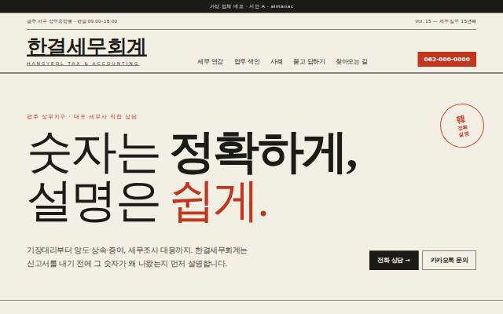
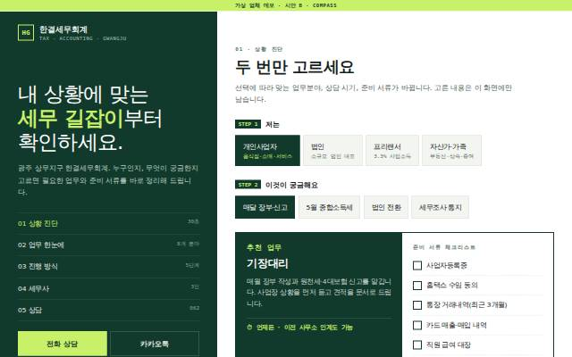
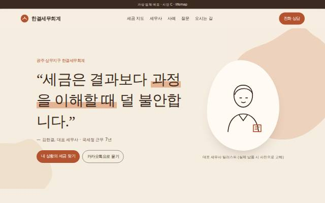

A · almanac 신문·연감 지면
괘선과 큰 명조 한 문장으로 "정확함"을 보여 주는 지면형. 오늘 날짜 기준 다음 신고 기한 D-day 와 12개월 세무 연감이 시그니처.
| layout | editorial |
|---|---|
| hero | statement |
| typePair | Hahmlet + Pretendard |
| palette | paper·ink·vermilion |
| signature | 세무 연감 (실시간 D-day) |
가상 업체 "한결세무회계"(광주 상무지구) 재디자인 시안입니다. 기존 trust(swiss-grid · split-media · Cormorant+나눔명조 · navy·brass)와도, 서로 간에도 레이아웃·히어로·서체·색이 모두 다릅니다. 메인 1페이지만 퍼블리싱했습니다.

괘선과 큰 명조 한 문장으로 "정확함"을 보여 주는 지면형. 오늘 날짜 기준 다음 신고 기한 D-day 와 12개월 세무 연감이 시그니처.
| layout | editorial |
|---|---|
| hero | statement |
| typePair | Hahmlet + Pretendard |
| palette | paper·ink·vermilion |
| signature | 세무 연감 (실시간 D-day) |

왼쪽 고정 패널, 오른쪽 스크롤. 고객 유형과 궁금한 업무를 고르면 추천 업무·상담 시기·준비 서류 체크리스트가 바로 바뀌는 진단 도구가 시그니처.
| layout | split |
|---|---|
| hero | interactive |
| typePair | IBM Plex Sans KR + IBM Plex Mono |
| palette | chalk·forest·lime |
| signature | 선택형 진단 → 서류 체크리스트 |

대표 세무사의 한 문장으로 시작하는 긴 스크롤 이야기. 창업·채용·법인 전환·매도·증여·상속 장면별로 챙길 세금을 보여 주는 세금 지도가 시그니처.
| layout | story |
|---|---|
| hero | quote |
| typePair | Gowun Batang + Gowun Dodum |
| palette | sand·terracotta·cocoa |
| signature | 인생 이벤트별 세금 지도 |
가상 업체 데모 · 썸네일은 시안 첫 화면(1280px). 선택 후 /build-site pro-tax-office <concept> 로 완성 사이트를 만듭니다. 선택되지 않은 시안은 디자인 라이브러리로 남깁니다.